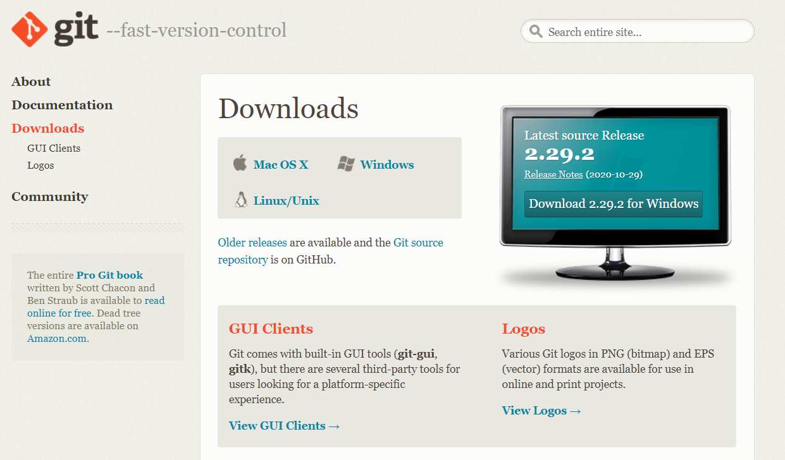
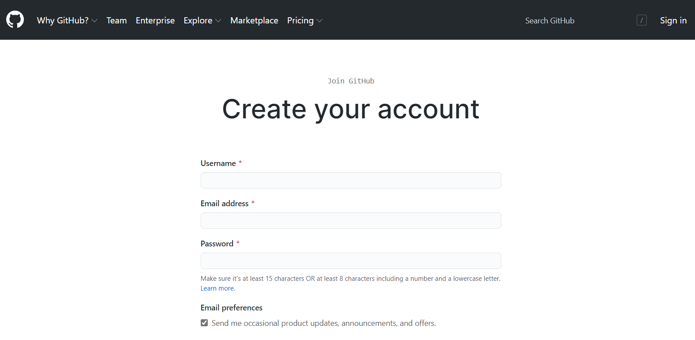
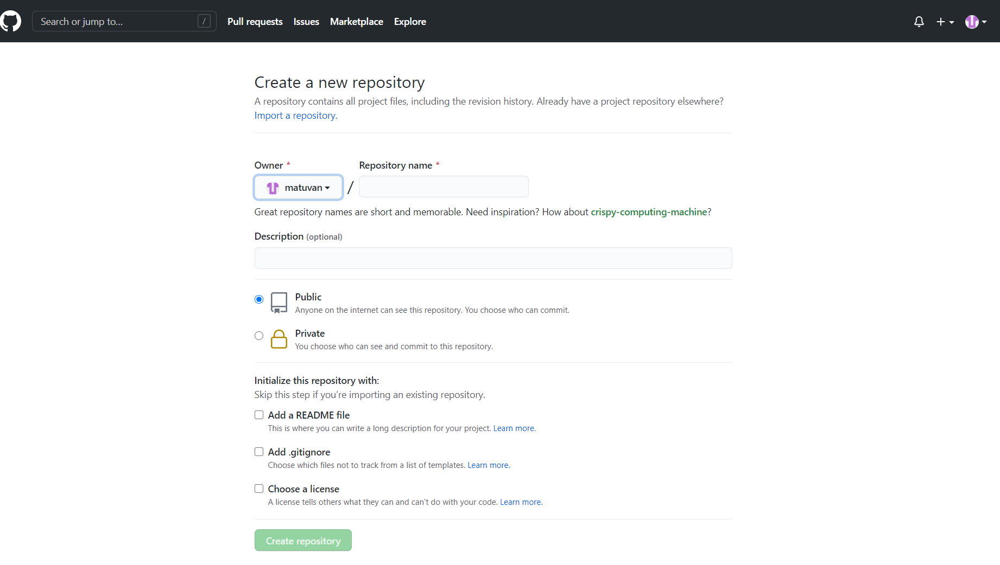
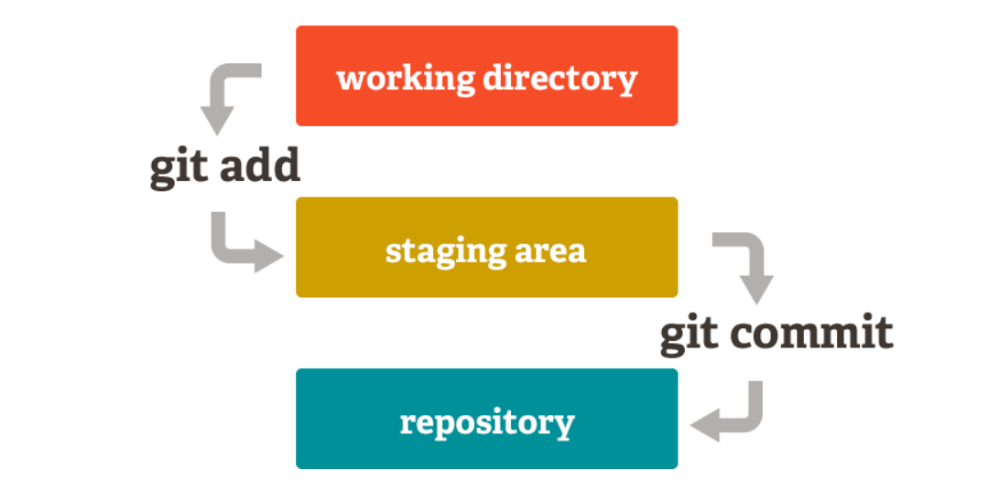

Overview: What is Git and Github?
Git is the most commonly used version control system. Git tracks the changes you make to files, so you have a record of what has been done, and you can
revert to specific versions should you ever need to. Git also makes collaboration easier, allowing changes by multiple people
to all be merged into one source.
GitHub is an open-source repository hosting service, sort of like a cloud for code.
It hosts your source code projects in a variety of different programming languages
and keeps track of the various changes made to every iteration.
Other GitHub users can review your code and propose changes.
Why do we need them?
Git :
It is used for Source Code Management in software development.
Git favors both programmers and non-technical users by keeping track of their project files.
It allows multiple users to work together.
Large projects can be handled efficiently.
Github :
It makes it easy to contribute to open source projects
Showcase the work to attract recruiters
Track changes in your code across versions
Installing Git and create a Github account
Step 1: Download Git and create a Github account
Start installing Git by
click here
(if it is not installed yet) and after finishing setting up Git, sign up an account in Github
here.


Step 2: Create a git repository
Go to the Github website, sign in with the account that have been created in step 1 and create a repository

How to use Git
Before using Git, there are some definitions related to Git that users should know :
Repository: stores all the information needed to manage changes and history of the entire project.
Repository is divived into two types: remote and local.
Local repository: is the repository on user's computers and it will sync with remote repository by using git commands.
Remote repository: is the repository which is installed on dedicated servers. Ex: Github, GitLab etc.
Working tree and Index (or staging area): Folders which under Git's management, where everyone work on there are called
working tree. Between repository and working tree exist a place called index or staging area,
where is for commiting into the repository.

Now let's begin to use Git !